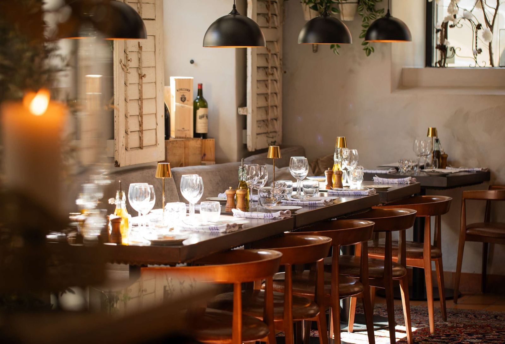
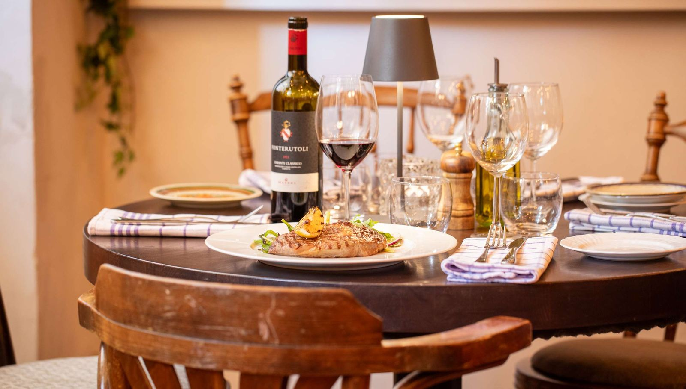
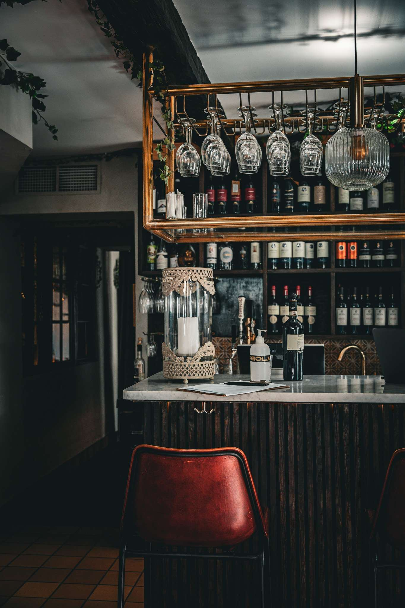
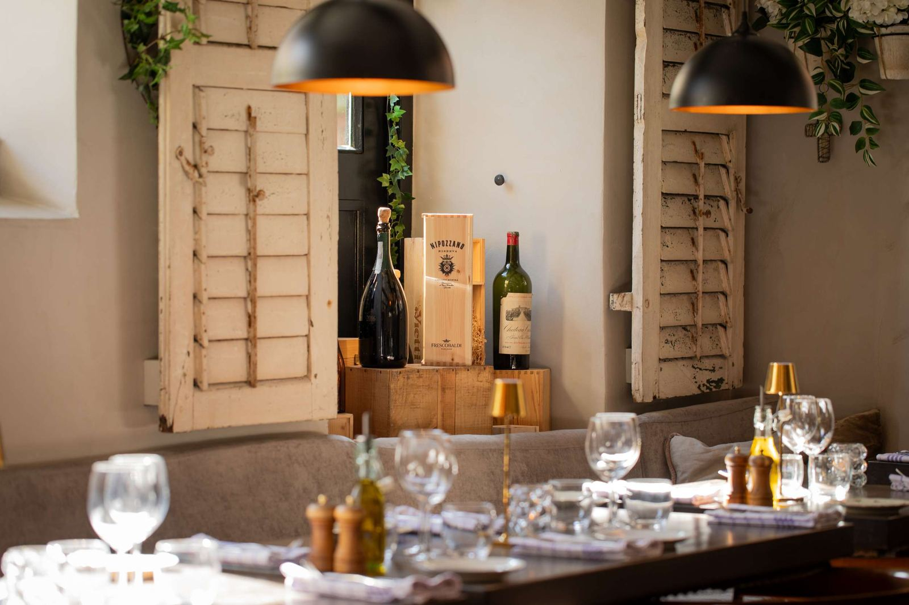
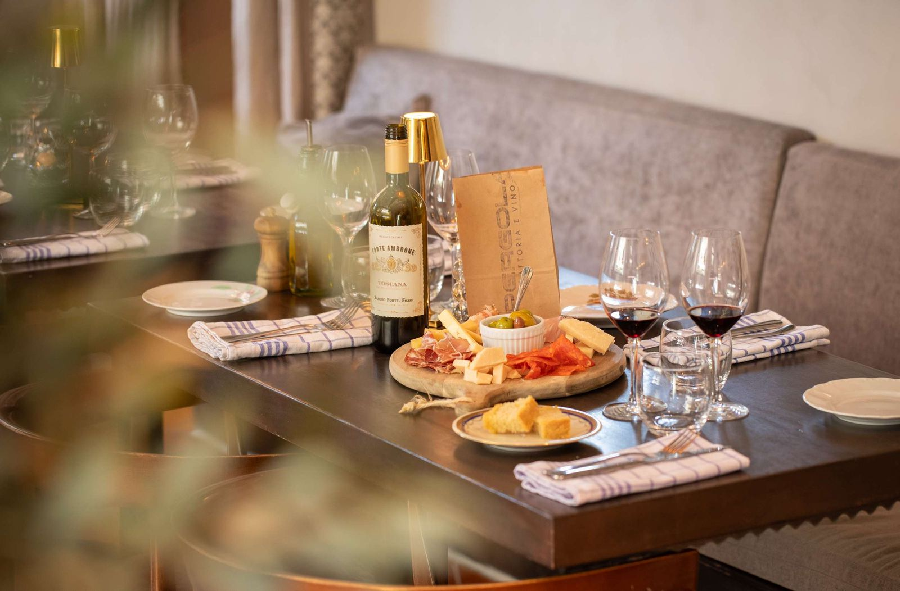
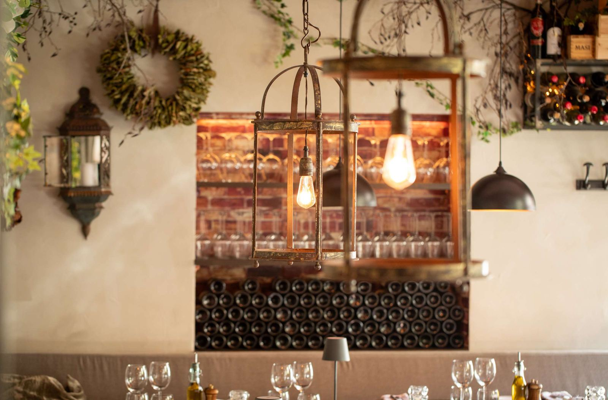
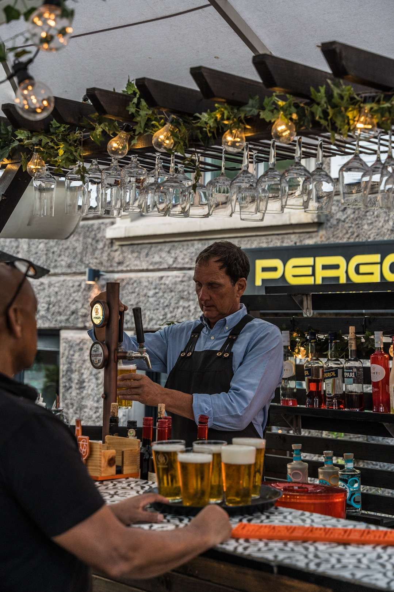
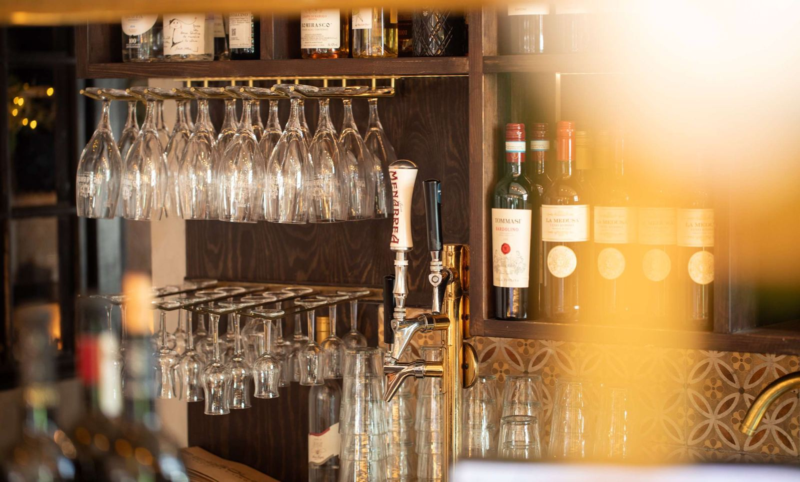

Pergola, trattoria e vino. Ett stycke Italien mitt i hjärtat av Göteborg.
Öppet alla dagar från kl. 16
Eller ring 031-18 89 80
Varje söndag
Söndagsmiddag
Tre rätter 295 kr
- FörrättBruschetta Classica
- Varmrätt – välj mellanPasta Pollo e Chili
Pasta alla Carbonara
Veg Pasta - EfterrättTiramisu

Meny
Allergi? Laktos- eller glutenintolerant? Fråga gärna personalen innan ni beställer. Vi anpassar gärna rätterna, och det finns vegetariska alternativ.
Något före To start with
Gin, campari and sweet vermouth
Malfy pink grape gin and Italian tonic
Aperol, prosecco, soda and orange
Limoncello, prosecco, soda and lemon
Set menu
Bruschetta
Pasta, kockens val
Selvatica
Tiramisu
495 kr
Antipasto
Grillat lantbröd med tomat, rödlök, basilikaröra & buffelmozzarella
Grilled sourdough bread with tomato, red onion, basil & mozzarella
Scampi i het sås med vitlök, chili & örter
Scampi in hot sauce with garlic & chili
Tunna skivor kalv, citron, olivolja, parmesan, ruccola & pinjenötter
Thin slices of veal, lemon, olive oil, parmesan, arugula & pine nuts
Tre sorters chark, tre sorters ost & oliver
Italian cold cuts & cheeses, olives included
Krämig hummersoppa med pilgrimsravioli
Creamy lobster soup with scallop ravioli
Marinated olives
Garlic bread
Pasta
Linguine med kyckling, zucchini, rödlök, vitlök, chili, grädde, färska örter & grana
Linguine with chicken, zucchini, red onion, garlic, chili, cream, fresh herbs & grana
Linguine med bacon, svartpeppar, grädde, pecorino & äggula
Linguine with bacon, black pepper, cream, pecorino & egg yolk
Linguine med scampi, chili, vitlök, örter & tomat
Linguine with scampi, chili, garlic, herbs & tomato
Pappardelle med kalv & skogschampinjoner i en krämig cognacsås
Pappardelle with veal & mushrooms in a creamy cognac sauce
Rigatoni med oxfilé, skogschampinjon, rödlök & gorgonzolasås
Rigatoni with fillet of beef, mushrooms, red onion & gorgonzola sauce
Kronärtskocksfylld hemgjord ravioli med tomat och mozzarella
Home made ravioli with artichoke, tomato & mozzarella
Bowl of parmesan
Pizza
Tomat, basilika, olivolja, toppad med buffelmozzarella
Tomato, basil, olive oil and buffalo mozzarella
Tomat, mozzarella, pesto, ruccola & prosciutto
Tomato, mozzarella, pesto, arugula & prosciutto
Tomat, mozzarella, rödlök & salame piccante
Tomato, mozzarella, red onion & spicy salami
Tomat, mozzarella, champinjoner, bacon & gorgonzola
Tomato, mozzarella, mushrooms, bacon & gorgonzola
Romersk lyxpizza med solkyssta tomater, mozzarella & burrata
Roman luxury pizza with sun-kissed tomatoes, mozzarella & burrata
Secondi
Grillad vildand, kantarellrisotto & viltsky
Grilled duck breast, chanterelle risotto and red wine sauce
Nattbakad oxkind, potatispuré, rödvinssås, svamp & bacon
Overnight baked cheek of beef, purée of potato, red wine sauce, mushroom & bacon
Smörstekt laxfilé, grönsaker, potatis & parmesansås
Butter fried salmon, vegetables, potatoes & parmesan sauce
Dolci
Klassisk tiramisu med mascarpone & marsala
Classic tiramisu with mascarpone & marsala
Fräsch citronsorbet med honung & bär
Fresh sorbet with honey & berries
Chokladtryffel
Chocolate truffle
Vit choklad-pannacotta med hallon
White chocolate pannacotta with raspberries
Caffè
- Cappuccino39 kr
- Bryggkaffe34 kr
- Espresso36 kr
- Caffè latte39 kr
- Te34 kr
Vino
Glas / flaska
Mousserande Sparkling
- Prosecco115 / 425 kr
- Champagne895 kr
Vitt White
- Husets vita House white125 / 475 kr
- Pinot Grigio Puittano135 / 555 kr
- Chardonnay Lavis140 / 575 kr
- Riesling Lavis155 / 625 kr
- Etna Bianco Benanti695 kr
Rött Red
- Husets röda House red125 / 475 kr
- Valpolicella Farina140 / 575 kr
- Ripasso Cantina Negrar145 / 595 kr
- Chianti Piccini145 / 595 kr
- Chianti Classico Fonterutoli155 / 625 kr
- Nebbiolo Patrizi175 / 695 kr
- Sasso al Poggio695 kr
- Tirrenico Mazzei695 kr
- Etna Rosso Benanti695 kr
- Barolo Patrizi795 kr
- Brunello Val di Suga795 kr
- Amarone Bertani895 kr
Fråga oss gärna om fler goda viner från källaren.
Ask us about more fine wines from the cellar.
Öl & cider Beer & cider
Fatöl Draught beer
- Gränges 40 cl Svensk89 kr
- Menabrea 40 cl Italiensk99 kr
Flasköl Bottled beer
- Peroni 33 cl95 kr
- Mariestads 50 cl115 kr
- Sitting Bulldog IPA 33 cl115 kr
- Carlsberg Hof 33 cl95 kr
Cider
- Kopparberg Jordgubb75 kr
- Kopparberg Päron75 kr
- Briska Riesling/Persika Demi Sec85 kr
Alkoholfritt Non-alcoholic
- Läsk Cola, Cola Zero, Fanta, Sprite55 kr
- Limonata65 kr
- Briska 0,5 % Fläder55 kr
- Menabrea 0,0 % Lager65 kr
- Easy Rider 0,0 % IPA65 kr
- Alkoholfritt vin75 kr
- Pellegrino55 kr
- Loka45 kr
Om oss
En restaurang där den italienska matkulturen och förstklassiga råvaror kombineras i en stämningsfull atmosfär.
Här bjuder vi på en hemtrevlig och familjär atmosfär, där både stora och små kan känna sig som hemma. Med passion för det genuina italienska köket lagar vi mat på noggrant utvalda råvaror av högsta kvalitet, med allt från klassiska pastarätter till pizzor och delikata desserter.
Vi anpassar gärna rätterna efter allergier, och det finns vegetariska alternativ på menyn. Pergola har fullständiga rättigheter och ett väl utvalt sortiment av viner, perfekta till maten eller som sällskapsdryck.
Hos oss får du en smakresa till Italien, utan att lämna Göteborg. Benvenuti!






Boka bord
Boka direkt här, ring eller mejla oss.
- 031-18 89 80
- info@lapergola.se
- Södra Vägen 26, Göteborg
Ett stenkast från Avenyn och Svenska Mässan - Instagram @pergola_26
Öppettider
- Måndag – fredag
- Från kl. 16
- Lördag – söndag
- Från kl. 16
Välkommen!